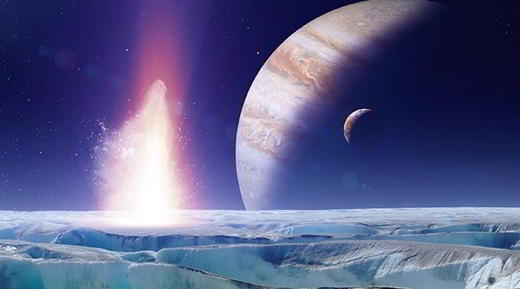
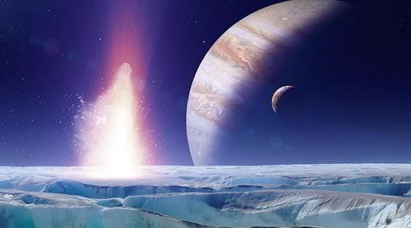

Europe
Europe est la plus petite des quatre lunes galiléennes, de Jupiter, découvertes par Galilée et Simon Marius qui la nomma ainsi en l'honneur d'Europe, princesse phénicienne, ravie sur une plage de Sidon (Saïda ville du Liban et capitale de la Phénicie vers 1200 av. J.-C.) par Zeus métamorphosé en taureau blanc. De leur union naquirent Minos, Rhadamanthe et Sarpédon. La lune Europe est soumise aux forces gravitationnelles de Jupiter. Europe est presqu'aussi grosse (90%) que notre Lune. La sonde Galileo a révélé la présence à sa surface de cristaux de sulfate de magnésium, qui sur Terre se trouvent dans les lacs asséchés. La glace de surface de plusieurs kilomètres d'épaisseur cache un océan maintenu liquide par l'échauffement produit par les forces de marée dues à sa proximité avec Jupiter. Cet océan pourrait atteindre 150 km d'épaisseur. A 500 millions de km de la terre, Europe pourrait abriter une forme de vie car elle contient 2 fois plus d'eau liquide que tous les océans de notre planète. La friction produit par les effets de marée produit de la chaleur, Europe pourrait garder de l'eau à l'état liquide. Les fractures de sa croute de glace montrent cette friction. Ces fissures sont visibles sur la photo, ce sont des lignes doubles pour la plupart, qui s'allongent de chaque côté de la fissure, faisant remonter l'eau 'souterraine'. Ces fissures s'ouvrent et se ferment constamment. De plus, son atmosphère contient de l'oxygène et la surface d'Europe semble abriter des éléments organiques venus des comètes.
L'océan 'souterrain' d'Europe
La lune de Jupiter Europa se caractérise par un albédo élevé (0,67) et une croute glacée fracturée, composée de blocs fissurés. Ces caractéristiques sont les meilleures preuves d'une activité tectonique aussi bien horizontale que verticale et d'un renouvèlement de sa surface. La surface de la croute de glace est déchirée par de longues et larges bandes sombres qui indiquent une intense déformation. Cette surface prend l'allure d'un vaste réseau de fractures entremêlées, en périphérie desquelles s'accumulent parfois des sulfates hydratés de magnésium et de sodium (McCord et al., 1998) et/ou de l'acide sulfurique (Carlson et al., 1999). Ces données combinés avec les données géologiques, en particulier, la présence d'un champ magnétique, ont conduit les scientifiques à penser que ces traces étaient probablement dues à la présence d'un océan souterrain. Sur cette image en fausses couleurs, la couleur brun-rouge représente les zones non-glacées de la croute, résultant de l'activité géologique. Les zones blanches sont les traces de la matière éjectée, lors de la formation du cratère d'impact Pwyll. Les plaines glacées sont montrées sur cette image, dans les tons bleus où l'on distingue de gros grains de glace (en bleu foncé) et des grains fins de glace (en bleu clair). On y voit aussi de longues et sombres lignes de crêtes et de fractures sur la croute terrestre, dont certaines font plus de 3000 km de long. Ces images ont été obtenues par la sonde Galileo de la NASA entre septembre 1996 et février 1997, à une distance de 671 880 km.
Lunes de Jupiter
Jupiter, la plus grande planète du système solaire est entourée de plus de 60 satellites naturels. Les premières lunes de Jupiter furent découvertes en 1610. Galileo Galilei découvrit à cette époque les quatre plus grands satellites du système jovien Io, Europe, Ganymède et Callisto. Ces lunes appelées depuis galiléennes, furent les premières a être observées hormis celle de la Terre. Aujourd'hui grâce aux sondes spatiales, nous avons une vue plus complète du système Jovien. C’est la série des missions Voyager qui a permis de lever le voile sur le système jovien en découvrant en 1979, Métis, Thébé et Adrastée. Avant l'ère spatiale, les astronomes avaient découverts Amalthée (1892), Himalia (1904), Élara (1905), Pasiphaé (1908), Sinopé (1914), Lysithéa et Carmé (1938), Ananké (1951), Léda (1974) et Thémisto (1975. Entre 1979 et 1999, aucun nouveau satellite de Jupiter ne fut découvert et il fallut attendre le 6 octobre 1999, pour que le programme Spacewatch découvre une nouvelle lune à Jupiter, Callirrhoé. Des observations en 2000, révélèrent dix nouvelles lunes, portant le nombre de satellites à 28 après la redécouverte de Thémisto, Kalyké, Jocaste, Érinomé, Harpalyké, Isonoé, Praxidiké, Mégaclité, Taygèté, Chaldéné et S/2000 J 11. L'année suivante, onze autres lunes furent découvertes, amenant le total à 39, Hermippé, Eurydomé, Spondé, Kalé, Autonoé, Thyoné, Pasithée, Euanthé, Orthosie, Euporie et Aitné. En 2002, une seule lune, Arché, fut découverte. En 2003 il y a la découverte de 23 nouveaux satellites, Eukélade, S/2003 J 2, S/2003 J 3, S/2003 J 4, S/2003 J 5, Hélicé, Aœdé, Hégémone, S/2003 J 9, S/2003 J 10, Kallichore, S/2003 J 12, Cyllène, S/2003 J 14, S/2003 J 15, S/2003 J 16, S/2003 J 17, S/2003 J 18, S/2003 J 19, Carpo, Mnémé, Thelxinoé et S/2003 J 23. La plupart des 47 satellites découverts après les années 2000 sont de petites lunes de quelques kilomètres de diamètre, le plus grand atteignant à peine 9 km. En 2006, on connaissait 63 lunes à Jupiter, le record du système solaire.
 
